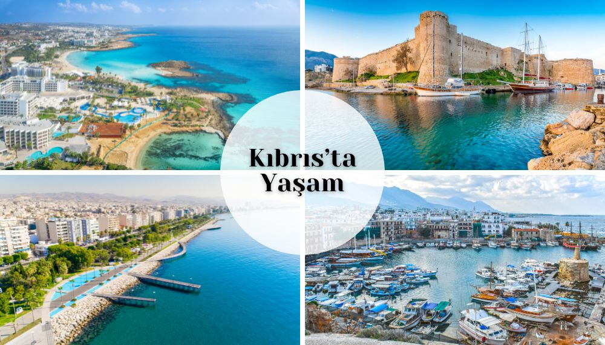

KKTC’de Yaşam: Akdeniz’in İncisinde Huzurlu Bir Hayat
Kuzey Kıbrıs Türk Cumhuriyeti (KKTC), Akdeniz’in eşsiz incisi olarak, doğal güzellikleri, zengin tarihi ve misafirperver halkıyla yaşamak için mükemmel bir yer. Dev/Soy Danışmanlık olarak, çalışma izni, oturma izni veya öğrenci vizesi ile gelenler için bu rehberi hazırladık. KKTC’de yaşam maliyetleri uygun, güvenlik yüksek ve fırsatlar bol – hadi bu cenneti birlikte keşfedelim!
Genel Bilgiler ve Konum
KKTC, 3.355 km² yüzölçümüyle adanın üçte birini kapsar. Nüfus yaklaşık 264.172, başkent Lefkoşa’da 84.893 kişi yaşar. Diğer şehirler: Gazimağusa (64.429), Girne (61.192), Güzelyurt (31.568), Yeni İskele (22.090). Para birimi Türk Lirası (TL), ancak Euro, Dolar ve Sterlin yaygın. Ada, Türkiye’ye 65 km, Suriye’ye 112 km mesafede; doğu, batı ve güneyde komşu ülkelerle çevrili. %45’i tarıma elverişli arazinin %20’si sulanır, ormanlık alanlar %20’yi bulur. Öğrenci vizesi ile gelenler için üniversiteler, çalışma izni için turizm ve tarım fırsatları ideal.
Şehirler ve Tarihi Miras

Girne
MÖ 10. yüzyılda Akalar tarafından kurulmuş, Fenikeliler’in ticaret kolonisi olmuş. Roma döneminde Corineum olarak bilinen şehir, Bizans’ta Arap akınlarına uğramış. Bugün lüks otelleri ve limanıyla turizm merkezi – çalışma izni ile casino sektöründe iş bulabilirsiniz.
Lefkoşa
Asur kaynaklarında Ledra olarak geçen şehir, MÖ 300’te Ptolemy’nin oğlu Lefkos tarafından yeniden inşa edilmiş. Lüzinyanlar döneminde parlak bir çağ yaşamış, Venedik ve Osmanlı eserleriyle dolu. Başkent olarak oturma izni başvuruları için ana nokta.
İskele ve Karpaz
Gazimağusa-Karpaz yolunda yer alan İskele (eski adıyla Trikoma), Larnakalı Kıbrıslı Türkler’in yerleşimiyle Yeni İskele olmuş. Boğaz bölgesi turistik tesislerle dolu; Karpaz eşekleri ve bakir plajlar (Bafra, Altın Kumsal) huzur arayanlar için. Öğrenci vizesi ile gelenler burada sakin bir yaşam sürer.
İklim ve Doğa
Tipik Akdeniz iklimi: Yazlar sıcak (40°C’ye kadar), kışlar ılık (5-15°C), yıllık ortalama 19°C. Yılın 300 günü güneşli, ortalama yağış 500 mm. Bitki örtüsü: Çam, servi, zeytin, endemik çiçekler ve orkideler. Kuş göç yolları üzerinde, martı ve göçmen kuşlar yaygın. Oturma izni ile yerleşenler, doğa yürüyüşleri ve avcılık keyfi yapar.

Aktiviteler ve Gece Hayatı
Yılın 9 ayı denize girilebilir: Su kayağı, rüzgar sörfü, scuba dalışı (eşsiz sualtı kalıntıları), paragliding (masmavi gökyüzünde uçuş), yat turları (Girne Antik Liman’dan). Festivaller: Müzik, dans, folklor etkinlikleri. Gece hayatı: Casinolar (rulet, blackjack), barlar ve kulüpler. Çalışma izni ile turizmde kariyer yapın.

Mutfak ve Kültür

Doğu-Batı sentezi: Cacık, humus, hellim, şeftali kebabı, molehiya, kolokas, deniz ürünleri. Taze ve organik malzemeler köylerden gelir. Kültür: Uygarlıklar harmanı (Yunan, Mısır, Osmanlı eserleri). Misafirperver halk, yüksek okuryazarlık oranı. Öğrenci vizesi ile gelenler, çiftçi pazarlarında uygun fiyatlı alışveriş yapar.
Yaşam Maliyetleri ve Göçmenlik
Aylık maliyetler orta seviye: Kira 10.000-20.000 TL, alışveriş 5.000-10.000 TL. Ev alma: Şehirde yüz binlerce TL’den başlar. Eğlence: Restoranlar uygun, gece hayatı canlı. Kıbrıs Altın Vizesi: Gayrimenkul yatırımıyla oturma izni alın (minimum yatırım, temiz sicil, sağlık sigortası). Çalışma izni: İşveren sponsorluğuyla, öğrenci vizesi: Üniversite kaydıyla. KKTC vatandaşlığı: Türkler için yatırım yolu açık, ama program durduruldu – alternatif Altın Vize.
Neden KKTC’de Yaşamalısınız?
Ilıman iklim, ekonomik fırsatlar (turizm, eğitim), kültürel çeşitlilik, kaliteli sağlık ve eğitim. Güvenlik yüksek, toplum yapısı dostane. Dev/Soy olarak, çalışma izni, oturma izni ve öğrenci vizesi süreçlerinde yanınızdayız – başvuru, takip ve danışmanlıkta uzmanız!